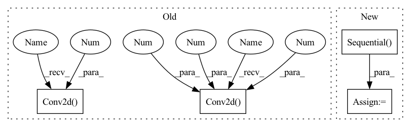

Pattern ID :59

Before Change
self.use_res_connect = self.stride == 1 and in_channels == out_channels
self.inv_block = nn.Sequential(
nn.Conv2d(in_channels, in_channels * expand_ratio, 1, 1, 0, bias=False),
nn.BatchNorm2d(in_channels * expand_ratio),
nn.PReLU(),
nn.Conv2d(in_channels * expand_ratio, in_channels * expand_ratio, 3, stride, 1,
groups=in_channels * expand_ratio, bias=False),
nn.BatchNorm2d(in_channels * expand_ratio),
nn.PReLU(),
After Change
nn.Conv2d(hidden_dim, oup, 1, 1, 0, bias=False),
nn.BatchNorm2d(oup),
])
self.conv = nn.Sequential(*layers)
def forward(self, x):
if self.use_res_connect:
return x + self.conv(x)
In pattern: SUPERPATTERN
Frequency: 4
Non-data size: 4
Instances
Fragment ID: 266501
Project Name: opendr-eu/opendr
Commit Name: 18da6a5d3ed5c2a291cb9c600a9fe4e5e17e5671
Time: 2021-01-26
Author: ptosidis@gmail.com
File Name: src/perception/face_recognition/algorithm/backbone/model_mobilenet.py
Class Name: InvertedResidual
Method Name: __init__
Parent Class: nn.Module
Fragment ID: 266532
Project Name: lornatang/srgan-pytorch
Commit Name: 2c11f14c44490604941be00d7661b19ad8f96597
Time: 2022-02-14
Author: liuchangyu1111@gmail.com
File Name: model.py
Class Name: Generator
Method Name: __init__
Parent Class: nn.Module
Fragment ID: 266503
Project Name: opendr-eu/opendr
Commit Name: 18da6a5d3ed5c2a291cb9c600a9fe4e5e17e5671
Time: 2021-01-26
Author: ptosidis@gmail.com
File Name: src/perception/face_recognition/algorithm/backbone/model_mobilenet.py
Class Name: InvertedResidual
Method Name: __init__
Parent Class: nn.Module
Fragment ID: 266535
Project Name: lornatang/srgan-pytorch
Commit Name: 9e0f283960ecefe65d9f18e11108f7e5b780f6da
Time: 2020-10-20
Author: liuchangyu1111@gmail.com
File Name: srgan_pytorch/model.py
Class Name: Discriminator
Method Name: __init__
Parent Class: nn.Module
Fragment ID: 266510
Project Name: coqui-ai/tts
Commit Name: c20a6b118555830d16437d294cc328f7e715fa32
Time: 2021-04-08
Author: rishikksh20@gmail.com
File Name: TTS/vocoder/models/multi_period_discriminator.py
Class Name: PeriodDiscriminator
Method Name: __init__
Parent Class: nn.Module